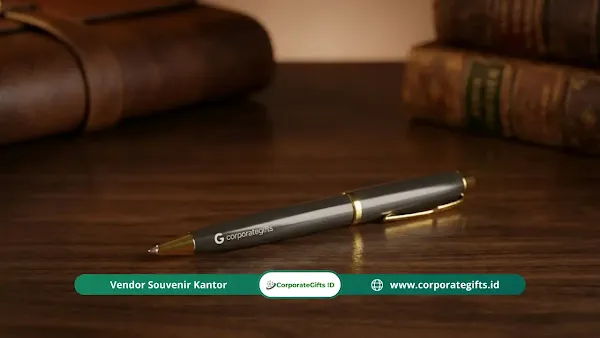

Corporate Gifts ID - Welcome kit karyawan adalah paket bingkisan berbranding yang disiapkan secara khusus oleh perusahaan untuk menyambut karyawan baru di hari pertama kerja. Umumnya, paket ini berisi buku catatan kerja, pulpen berlogo, tumbler vakum, tanda pengenal (ID card) beserta tali lanyard, dan surat sambutan personal dari manajemen. Tujuannya adalah membuat karyawan merasa dihargai, lekas beradaptasi, dan menekan potensi pengunduran diri dini (early turnover) pada fase masa percobaan kerja.
Bayangkan skenario nyata ini: Anda adalah seorang HR Manager yang baru saja menghabiskan waktu tiga bulan dan biaya jutaan rupiah untuk merekrut satu kandidat talenta terbaik. Di hari pertamanya, ia hadir dengan semangat berkobar, namun mendapati meja kerja kosong melompong, perangkat kerja belum siap, dan tidak ada sapaan hangat. Di benaknya seketika muncul keraguan fatal: "Apakah saya salah memilih tempat berkarier?"
Riset manajemen SDM menunjukkan bahwa sekitar 20% pergantian karyawan terjadi dalam 45 hari pertama kerja, dan faktor utamanya bersumber dari pengalaman orientasi pertama yang mengecewakan. Di sinilah welcome kit berperan vital sebagai alat strategis peningkatan retensi karyawan dan pembangun employer branding yang kokoh.
Poin Kunci Strategi Welcome Kit Karyawan:
- Membangun Psychological Safety: Menciptakan rasa aman dan keterikatan emosional (sense of belonging) sejak detik pertama menginjakkan kaki di kantor.
- Katalis Employer Branding Organik: Mendorong karyawan baru membagikan antusiasme mereka secara sukarela di LinkedIn dan Instagram.
- Kesiapan Kerja Instan (Ready-to-Work): Menyediakan perlengkapan esensial agar karyawan dapat langsung berkontribusi tanpa hambatan logistik.
- Pengalokasian Anggaran Terstruktur: Menerapkan tiga tier budget yang realistis dan terukur sesuai tingkat tanggung jawab jabatan.
Apa Itu Welcome Kit Karyawan?
Welcome kit karyawan, yang kerap disebut pula sebagai new employee welcome kit atau employee swag box, merupakan seperangkat perlengkapan kerja dan gaya hidup yang dikurasi selaras dengan identitas visual perusahaan. Dalam perspektif modal manusia (human capital), kotak sambutan ini adalah wujud nyata dari kultur, visi, dan perhatian manajemen terhadap kesejahteraan timnya.
Mengapa Perusahaan Wajib Berinvestasi pada Welcome Kit Karyawan?
Welcome kit bukanlah pos pengeluaran konsumtif, melainkan investasi strategis jangka panjang dengan return on investment (ROI) yang nyata. Berikut tiga alasan fundamental mengapa manajemen wajib mengalokasikan anggaran khusus:
1. Membangun Psychological Safety dan Rasa Memiliki
Memulai pekerjaan baru selalu memicu kecemasan adaptasi. Saat karyawan baru menerima paket sambutan yang serasi dengan rekan kerja seniornya, alam bawah sadar mereka menangkap sinyal positif bahwa mereka telah resmi diterima sebagai bagian dari keluarga besar tim kerja.
2. Menjadi Mesin Employer Branding Gratis di Media Sosial
Tagar #NewJob dan #OnboardingKit di jejaring profesional LinkedIn dipenuhi ribuan unggahan bangga dari karyawan baru yang memamerkan kotak cenderamata kantor mereka. Unggahan organik ini menjangkau ribuan kandidat potensial di luar sana tanpa mengeluarkan anggaran promosi sepeser pun.
3. Mempercepat Kesiapan Produktivitas (Ready-to-Work)
Menghilangkan kebingungan administratif di hari pertama. Buku panduan karyawan (employee handbook), kartu akses, buku catatan, dan alat tulis yang siap pakai di meja kerja memangkas waktu terbuang, sehingga karyawan baru dapat langsung fokus memahami tugas pokok dan fungsinya.
Apa Saja Isi Welcome Kit Karyawan yang Efektif?
Kurasi suvenir sambutan yang berhasil menggabungkan empat elemen pilar berikut:
1. The Essentials (Penyokong Produktivitas Harian)
- Notebook Custom: Pilih jilid hardcover eksklusif dengan kertas tebal minimal 80 gsm agar tinta tidak tembus saat mencatat notula penting.
- Professional Metal Pen: Pulpen logam dengan grafir laser nama atau logo perusahaan memberikan bobot kemewahan saat digunakan di ruang rapat.
- Lanyard & ID Card Holder: Memudahkan akses fisik kantor sekaligus menegaskan identitas korporat karyawan.
2. Lifestyle dan Wellness (Simbol Perhatian Kesejahteraan)
- Tumbler Stainless Steel SUS304: Menjaga suhu minuman tetap dingin atau panas selama 8-12 jam, mendukung gaya hidup sehat dan bebas botol plastik sekali pakai.
- Apparel Kantor (Kaos atau Hoodie Katun): Gunakan bahan katun combed yang nyaman dengan penempatan logo yang elegan (subtle branding) agar percaya diri dipakai bepergian.
3. Tech Support (Sentuhan Modernitas Kerja)
- Flashdisk OTG atau Mouse Nirkabel: Mendukung mobilitas kerja harian dengan performa transfer file yang stabil.
- Power Bank Fast Charging: Sangat membantu bagi staf lapangan atau tim penjualan yang memiliki mobilitas tinggi.
4. The Human Touch (Sentuhan Emosional Tulus)
- Kartu Ucapan CEO / Manajemen: Kartu berdesain elegan dengan pesan personal yang mencantumkan nama panggilan karyawan baru secara tertulis menghadirkan kehangatan mendalam.
- Stiker Pack Laptop: Berisi ilustrasi maskot atau jargon positif budaya kantor yang menyenangkan.
Tabel Rekomendasi Alokasi Budget Welcome Kit per Level Jabatan
Untuk memastikan efisiensi anggaran tanpa mengurangi nilai kehormatan, perusahaan dapat menerapkan segmentasi budget berjenjang:
| Tier Alokasi Budget | Kisaran Harga per Paket | Target Level Jabatan | Rekomendasi Komposisi Item | Tipe Kemasan (Packaging) |
|---|---|---|---|---|
| Tier 1: Starter Pack | Rp100.000 - Rp250.000 | Karyawan magang (internship), staf entry-level | Notebook spiral, pulpen gel, lanyard custom, stiker pack, mug keramik | Boks karton corrugated kraft berstempel logo |
| Tier 2: The Professional | Rp250.000 - Rp500.000 | Karyawan tetap, spesialis, supervisor operasional | Buku agenda hardcover, pulpen metal grafir, tumbler stainless SUS304, kaos katun, kartu e-money custom | Hardbox kaku berlapis kertas linen berlogo foil perak |
| Tier 3: The Executive | Di atas Rp500.000 | Manajer senior, direktur, konsultan spesialis VIP | Tumbler vakum premium, jaket hoodie bordir, power bank nirkabel, earphone TWS, agenda kulit asli | Boks kaku bermagnet (magnetic gift box) dengan bantalan busa EVA presisi |

Penyusunan boks merchandise onboarding yang rapi di meja kerja memberikan kejutan membahagiakan saat karyawan baru pertama kali tiba.
3 Kesalahan Fatal dalam Membuat Welcome Kit yang Harus Dihindari
Niat baik dapat berujung pada rasa kecewa jika dieksekusi tanpa kehati-hatian. Hindari tiga kekeliruan fatal ini:
- Ukuran Pakaian yang Salah: Hindari membagikan kaos berukuran bebas (all-size) yang sering kali tidak pas di badan. Mintalah preferensi ukuran baju kandidat saat proses pengiriman surat penawaran kerja (offering letter).
- Kualitas Barang Murahan: Memberikan barang yang lekas rusak (seperti pulpen macet atau power bank tanpa standar keselamatan) justru merusak reputasi perusahaan. Lebih baik memberikan tiga barang berkualitas tinggi daripada sepuluh barang murahan.
- Kesalahan Ketik Nama (Typo): Salah mengeja nama lengkap atau nama panggilan karyawan pada kartu ucapan mencerminkan ketidaksiapan dan ketidakpedulian panitia pengadaan.
Bagaimana Cara Memilih Vendor Welcome Kit Terpercaya?
Memilih mitra produksi korporat menuntut kejelian terhadap aspek legalitas, mutu, dan ketepatan jadwal:
- Wajib Meminta Sampel Fisik (Proofing): Selalu minta sampel dummy untuk memeriksa ketebalan bahan, kerapian jahitan, dan keakuratan warna cetak sebelum menyetujui produksi massal.
- Fleksibilitas Kesesuaian Warna Brand (Pantone Color Matching): Pastikan vendor mampu mereproduksi warna khas identitas korporat Anda secara presisi pada berbagai material media.
- Komitmen Ketepatan Waktu: Keterlambatan pengiriman paket suvenir berarti hilangnya momen berharga di hari pertama kerja karyawan.
- Jaminan Garansi Produk Rusak: Pilih vendor berpengalaman seperti CorporateGifts.ID yang berani memberikan garansi penggantian barang apabila ditemukan cacat produksi.
Pertanyaan Seputar Welcome Kit Karyawan (FAQ)
Kesimpulan dan Solusi Pengadaan Bersama CorporateGifts.ID
Menyambut anggota tim baru dengan paket welcome kit karyawan yang dipersiapkan matang bukan sekadar urusan seremonial. Kotak sambutan ini adalah pesan nyata kepedulian perusahaan yang menegaskan: "Kami menyambut dan menghargai kehadiran Anda."
Biaya merekrut karyawan pengganti karena tingginya angka perputaran kerja (turnover) jauh melampaui harga satu kotak boks sambutan yang elegan. Wujudkan paket onboarding kit profesional perusahaan Anda bersama tim konsultan ahli di CorporateGifts.ID. Kami menyediakan konsultasi pemilihan item, pratinjau desain mockup digital gratis, hingga pengiriman tepat waktu ke seluruh kantor cabang di Indonesia.

Ditulis oleh: Arinda Zakia
Senior Corporate Gifting SpecialistSpesialis pengadaan suvenir korporat dan konsultan retensi talenta di CorporateGifts.ID. Berpengalaman lebih dari 9 tahun membantu divisi Human Resources di berbagai perusahaan multinasional dan BUMN dalam merancang program apresiasi kerja serta kurasi paket onboarding karyawan baru yang berdampak positif.
Lihat Profil Lengkap & Panduan Lainnya